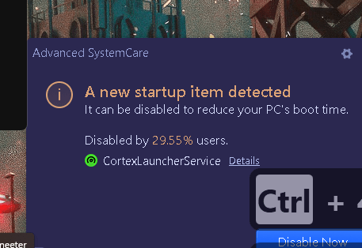
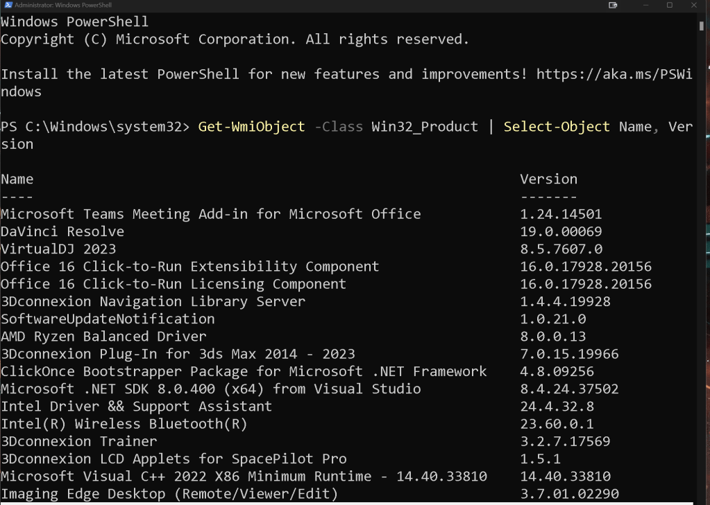
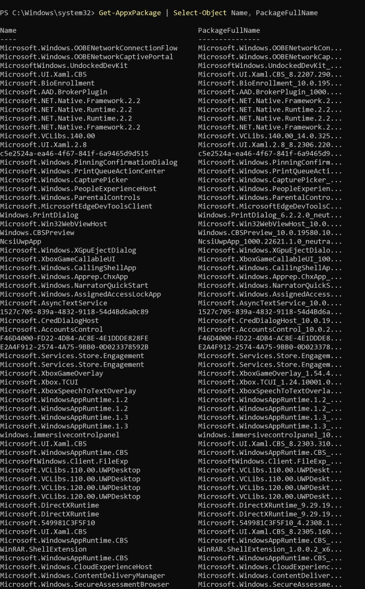
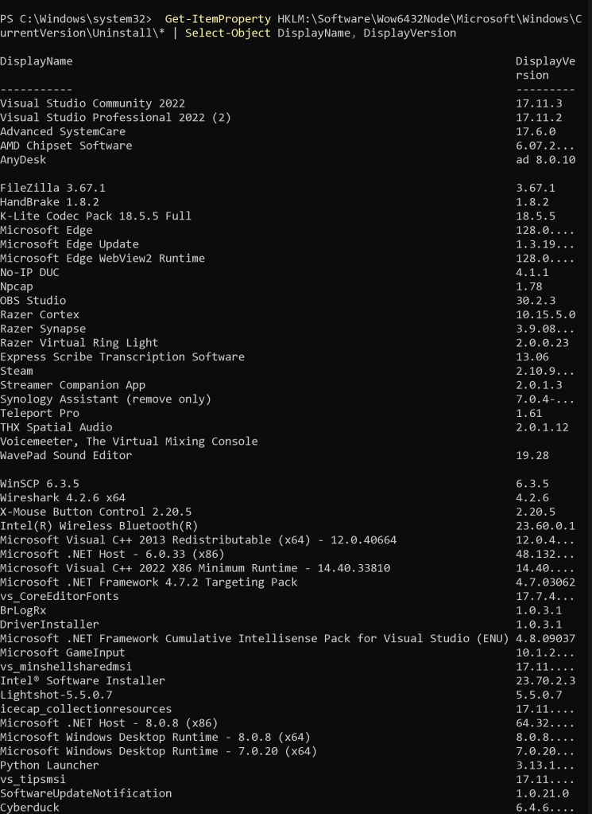
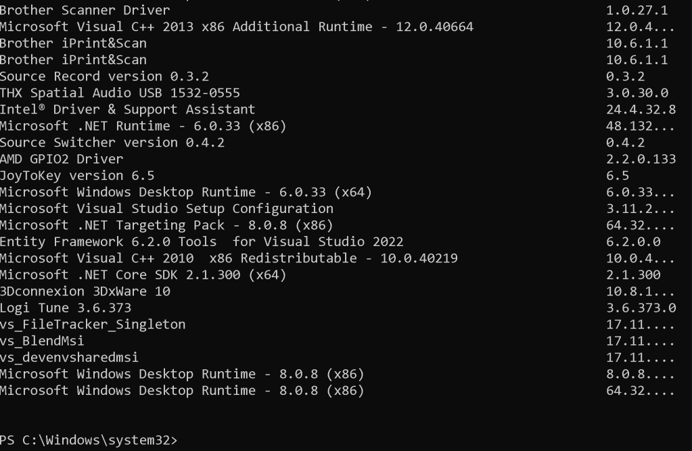
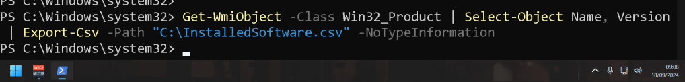
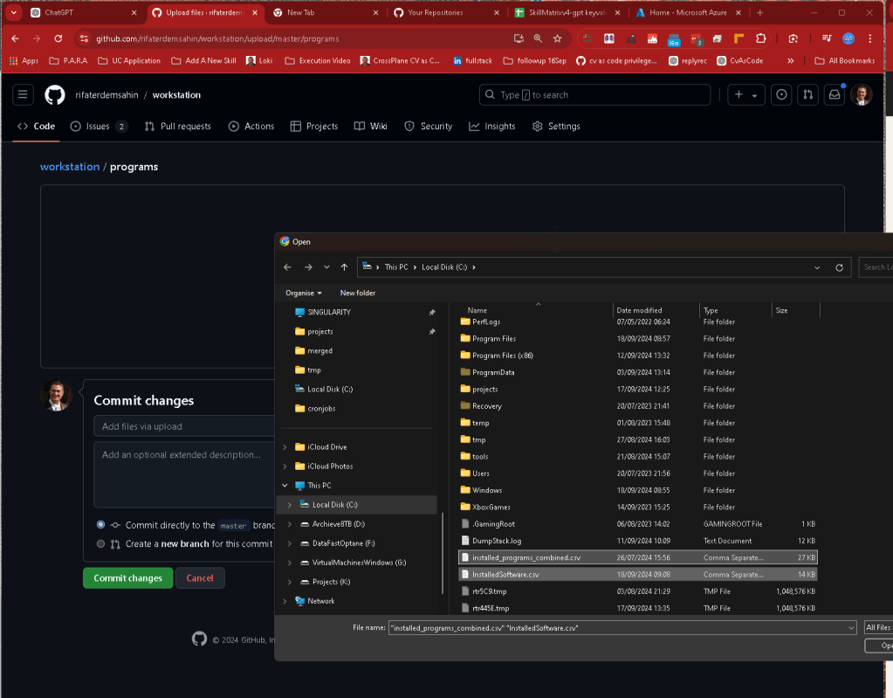

📝 Exploring Installed Software on Windows 11 with PowerShell 🚀

📝 Exploring Installed Software on Windows 11 with PowerShell 🚀
As someone who works in tech or is simply curious about the inner workings of your system, it’s often useful to know what’s installed on your Windows 11 machine. PowerShell provides a powerful and easy way to do this using one-liner scripts.
Let’s walk through the steps to list installed software on your machine using PowerShell. We'll be pausing between each major section for a screenshot, so let’s get started!
💡 What I Want to Achieve
🔍 We’ll explore how to:
-
List software installed through Windows Installer.
-
Check for apps installed from the Microsoft Store.
-
Display installed software versions and more.
🚀 One-liner Scripts with PowerShell
1️⃣ Listing Installed Programs via Windows Installer
The easiest way to get a list of software installed via traditional Windows Installer is to use the following command:
Get-WmiObject -Class Win32_Product | Select-Object Name, Version

`PS C:\Windows\system32> Get-WmiObject -Class Win32_Product | Select-Object Name, Version
Name Version
---- -------
Microsoft Teams Meeting Add-in for Microsoft Office 1.24.14501
DaVinci Resolve 19.0.00069
VirtualDJ 2023 8.5.7607.0
Office 16 Click-to-Run Extensibility Component 16.0.17928.20156
Office 16 Click-to-Run Licensing Component 16.0.17928.20156
3Dconnexion Navigation Library Server 1.4.4.19928
SoftwareUpdateNotification 1.0.21.0
AMD Ryzen Balanced Driver 8.0.0.13
3Dconnexion Plug-In for 3ds Max 2014 - 2023 7.0.15.19966
ClickOnce Bootstrapper Package for Microsoft .NET Framework 4.8.09256
Microsoft .NET SDK 8.0.400 (x64) from Visual Studio 8.4.24.37502
Intel Driver && Support Assistant 24.4.32.8
Intel(R) Wireless Bluetooth(R) 23.60.0.1
3Dconnexion Trainer 3.2.7.17569
3Dconnexion LCD Applets for SpacePilot Pro 1.5.1
Microsoft Visual C++ 2022 X86 Minimum Runtime - 14.40.33810 14.40.33810
Imaging Edge Desktop (Remote/Viewer/Edit) 3.7.01.02290
Microsoft.NET.Sdk.iOS.Manifest-8.0.100 (x64) 17.5.8030
Microsoft Visual C++ 2008 Redistributable - x64 9.0.30729.4148 9.0.30729.4148
Microsoft Visual Studio Setup WMI Provider 3.11.2133.16870
Microsoft.NET.Sdk.macOS.Manifest-8.0.100 (x64) 14.5.8020
Microsoft.NET.Sdk.Maui.Manifest-6.0.300 24.78.0
vs_communitysharedmsi 17.11.35103
Microsoft .NET Framework 4.8 Targeting Pack 4.8.03761
Microsoft.NET.Workload.Mono.Toolchain.Current.Manifest (x64) 64.32.18380
Microsoft .NET AppHost Pack - 6.0.33 (x64_x86) 48.132.18378
Microsoft Visual C++ 2010 x64 Redistributable - 10.0.40219 10.0.40219
vs_minshellx64msi 17.11.35102
Microsoft ASP.NET Core 6.0.33 Targeting Pack (x64) 6.0.33.24379
Microsoft Visual C++ 2013 x86 Minimum Runtime - 12.0.40664 12.0.40664
Microsoft Visual C++ 2010 x86 Redistributable - 10.0.40219 10.0.40219
3Dconnexion Plug-In for Photoshop 2.11.0.19618
THX V3 APO Presets 3.0.14
Chrome Remote Desktop Host 129.0.6668.14
BrSupportTools 1.0.28.0
Microsoft .NET Runtime - 6.0.33 (x64) 48.132.18378
Windows Subsystem for Linux 2.2.4.0
Python 3.13.0b3 Development Libraries (64-bit) 3.13.113.0
Red Hat OpenShift Local 2.40.0
vs_communityx64msi 17.11.35103
Microsoft .NET Host - 8.0.8 (x86) 64.32.18380
64 Bit HP CIO Components Installer 22.2.1
Microsoft .NET Targeting Pack - 8.0.8 (x64) 64.32.18380
Google Chrome 128.0.6613.138
3Dconnexion Add-In for Revit 1.0.2.35
Microsoft.NET.Sdk.Android.Manifest-6.0.300 128.75.16384
DriverInstaller 1.0.3.1
IntelliTraceProfilerProxy 15.0.21225.01
Microsoft Azure Authoring Tools - v2.9.7 2.9.8999.45
Microsoft .NET AppHost Pack - 6.0.33 (x64_arm64) 48.132.18378
Camtasia 2023 23.4.8.53233
3Dconnexion Assembly Demo 0.9.8.0
Brother Scanner Driver 1.0.27.1
THX Spatial Audio USB 1532-0555 3.0.36.0
vs_communitymsires 17.11.35103
vs_githubprotocolhandlermsi 17.11.35102
Microsoft Windows Desktop Runtime - 8.0.8 (x64) 64.32.18376
Microsoft ASP.NET Core 6.0.33 Shared Framework (x64) 6.0.33.24379
VS Script Debugging Common 17.0.157.0
Microsoft .NET Host FX Resolver - 7.0.20 (x86) 56.80.15184
3Dconnexion Plug-In for Maya 6.0.15.19971
Microsoft Web Deploy 4.0 10.0.8305
vs_SQLClickOnceBootstrappermsi 17.11.35102
Microsoft Azure Libraries for .NET – v2.9 3.0.2310.23
Microsoft .NET Framework 4.7.2 Targeting Pack (ENU) 4.7.03062
Logi Tune 3.6.373 3.6.373.0
Microsoft ASP.NET Core Module for IIS Express 12.2.18292.0
BrLauncher 2.0.23.0
Microsoft GameInput 10.1.22621.3036
DriverInstaller 1.0.4.1
AMD WVR64 1.0.2
Microsoft Visual C++ 2013 x64 Minimum Runtime - 12.0.40664 12.0.40664
Minecraft Launcher 2.0.0.0
Microsoft Azure Libraries for .NET – v2.9 3.0.2404.2502
Microsoft ASP.NET Core 8.0.8 Shared Framework (x64) 8.0.8.24369
Apple Mobile Device Support 18.0.0.32
Microsoft .NET Host FX Resolver - 6.0.33 (x64) 48.132.18378
Aspire.ProjectTemplates (x64) 8.1.0.0
Microsoft .NET AppHost Pack - 6.0.33 (x64) 48.132.18378
vs_clickoncebootstrappermsi 17.11.35103
Microsoft .NET Targeting Pack - 8.0.8 (x86) 64.32.18380
THX Spatial Audio USB 1532-0528 3.0.36.0
Node.js 22.8.0
Microsoft .NET Runtime - 8.0.8 (x86) 64.32.18380
Microsoft.NET.Sdk.Android.Manifest-8.0.100 (x64) 34.0.113
Blackmagic ATEM Switchers 9.0.2.0
Microsoft.NET.Workload.Emscripten.Manifest (x64) 48.132.18161
PowerToys (Preview) 0.84.1
Microsoft .NET Framework 4.8 SDK 4.8.03928
Microsoft.NET.Workload.Mono.Toolchain.net6.Manifest (x64) 64.32.18380
icecap_collection_x64 17.11.35102
THX Spatial Audio USB 1532-0555 3.0.30.0
Microsoft .NET Host - 6.0.33 (x86) 48.132.18378
Python 3.13.0b3 Core Interpreter (64-bit) 3.13.113.0
Loupedeck UI 5.9.1.19364 5.9.1.19364
3Dconnexion Plugin for Cinema 4D 1.0.1.38
Microsoft.NET.Sdk.MacCatalyst.Manifest-8.0.100 (x64) 17.5.8020
Microsoft .NET Framework 4.8 Targeting Pack (ENU) 4.8.03761
vs_filehandler_x86 17.11.35102
Microsoft.NET.Sdk.Aspire.Manifest-8.0.100 (x64) 64.64.18482
Microsoft ASP.NET Core 2.1.0 Shared Framework (x64) 2.1.12916.0
Microsoft.NET.Sdk.macOS.Manifest-8.0.100 (x64) 14.5.8030
Adobe Acrobat (64-bit) 24.003.20112
Adobe Refresh Manager 1.8.0
Aspire.Hosting.Orchestration.win-x64 (x64) 8.1.0.0
IIS 10.0 Express 10.0.08608
Microsoft Windows Desktop Runtime - 6.0.33 (x64) 48.132.18374
VMware Workstation 17.5.2
vs_minshellinteropsharedmsi 17.11.35102
paint.net 5.0.13
AMD DVR64 1.0.2
Microsoft .NET Host FX Resolver - 8.0.8 (x86) 64.32.18380
Microsoft .NET Core Host - 2.1.0 (x64) 16.64.26515
Microsoft ASP.NET Core Module V2 for IIS Express 17.0.22116.0
Microsoft.NET.Workload.Mono.Toolchain.Manifest 48.3.40665
Camtasia 2024 24.0.4.2964
Microsoft NetStandard SDK 15.0.51105
Synology Drive Client 7.3.0.15082
BrLogRx 1.0.3.1
vs_vswebprotocolselectormsi 17.11.35102
Microsoft .NET Toolset 6.0.425 (x64) 24.14.29999
AMD_Chipset_Drivers 6.07.22.037
Microsoft .NET Host FX Resolver - 6.0.33 (x86) 48.132.18378
Microsoft Command Line Utilities 15 for SQL Server 15.0.1300.359
Logitech LCD Manager 3.06.109
iCloud Outlook 15.0.0.215
Microsoft .NET Host FX Resolver - 8.0.8 (x64) 64.32.18380
Microsoft SQL Server 2019 LocalDB 15.0.4382.1
Microsoft Visual C++ 2022 X86 Additional Runtime - 14.40.33810 14.40.33810
XSplit Broadcaster 4.5.2402.2307
AMD PSP Driver 5.30.0.0
Bonjour 3.1.0.1
IntelliTraceProfilerProxy 15.0.21225.01
Microsoft.NET.Sdk.MacCatalyst.Manifest-6.0.300 125.191.42208
MobaXterm 24.2.0.5220
Microsoft .NET Toolset 8.0.400 (x64) 32.8.13214
Microsoft Windows Desktop Targeting Pack - 8.0.8 (x64) 64.32.18376
Microsoft .NET Host - 8.0.8 (x64) 64.32.18380
AMD Settings 2024.0823.115...
RemoteSetup 1.1.11.0
Zoom Workplace (64-bit) 6.1.45504
3Dconnexion Add-In for Autodesk Inventor 2.4.1.19400
DaVinci Resolve Control Panels 2.3.0.0
Microsoft.NET.Sdk.macOS.Manifest-6.0.300 100.255.42208
icecap_collectionresourcesx64 17.11.35102
Microsoft .NET AppHost Pack - 6.0.33 (x64_arm) 48.132.18378
Microsoft .NET AppHost Pack - 8.0.8 (x64_x86) 64.32.18380
Microsoft Azure PowerShell - April 2018 5.7.0.18831
Cyberduck 6.4.6.27773
AMD I2C Driver 1.2.0.124
THX V3 APO Presets 3.0.36.1
Microsoft .NET AppHost Pack - 8.0.8 (x64_arm64) 64.32.18380
Microsoft ASP.NET Web Tools Packages 17.0 - ENU 17.0.40305.0
Elgato 4K Capture Utility 1.7.13.6046
Microsoft .NET AppHost Pack - 8.0.8 (x64) 64.32.18380
VS JIT Debugger 17.0.157.0
Microsoft .NET Framework Cumulative Intellisense Pack for V... 4.8.09037
Microsoft .NET Runtime - 7.0.20 (x64) 56.80.15184
3Dconnexion Add-In for Solid Edge 3.6.3
vs_devenx64vmsi 17.11.35102
Microsoft Visual C++ 2022 X64 Minimum Runtime - 14.40.33810 14.40.33810
VS Immersive Activate Helper 17.0.157.0
Microsoft ASP.NET Core 8.0.8 Targeting Pack (x64) 8.0.8.24369
Loupedeck 5.9.1.19364 5.9.1.19364
vs_minshellmsires 17.11.35102
Microsoft.NET.Workload.Mono.Toolchain.net7.Manifest (x64) 64.32.18380
3Dconnexion Add-In for SOLIDWORKS 3.5.14.19609
Microsoft .NET Core SDK 2.1.300 (x64) 8.91.8884
Microsoft Visual C++ 2013 x64 Additional Runtime - 12.0.40664 12.0.40664
Microsoft TestPlatform SDK Local Feed 17.10.0.9037153
Microsoft.NET.Workload.Emscripten.net6.Manifest (x64) 64.32.18242
3Dconnexion Plugin for Unreal Editor 1.1.7.92
3Dconnexion 3DxWinCore 17.8.15.20373
Microsoft.NET.Sdk.tvOS.Manifest-8.0.100 (x64) 17.5.8030
Aspire.Hosting (x64) 8.1.0.0
Microsoft .NET Host - 7.0.20 (x86) 56.80.15184
THX V3 APO Presets 3.0.36.1
Microsoft.NET.Workload.Emscripten.Current.Manifest (x64) 64.32.18242
Microsoft .NET Host - 7.0.20 (x64) 56.80.15184
Python 3.13.0b3 Test Suite (64-bit) 3.13.113.0
vs_FileTracker_Singleton 17.11.35102
Microsoft ASP.NET Core 8.0.8 Targeting Pack (x86) 8.0.8.24369
Documentation Manager 23.70.2.3
Brother iPrint&Scan 10.6.1.1
Microsoft .NET 8.0 Templates 8.0.400 (x64) 32.10.13214
Microsoft .NET Runtime - 8.0.8 (x64) 64.32.18380
Elgato Stream Deck 6.7.3.21005
Microsoft System CLR Types for SQL Server 2019 15.0.2000.5
Microsoft .NET Standard Targeting Pack - 2.1.0 (x64) 24.0.28113
icecap_collection_neutral 17.11.35103
3Dconnexion Plug-In for Creo 2.0 - 9.0 2.4.6.19972
Microsoft Visual Studio Setup Configuration 3.11.2133.16870
3Dconnexion Add-In for AutoCAD 5.7.3.19836
Microsoft Azure Compute Emulator - v2.9.7 2.9.8999.43
Microsoft .NET Host - 6.0.33 (x64) 48.132.18378
Microsoft Windows Desktop Targeting Pack - 6.0.33 (x64) 48.132.18374
Aspire.Hosting.Sdk (x64) 8.1.0.0
Imaging Edge Desktop 1.2.01.04031
Aspire.Dashboard.Sdk.win-x64 (x64) 8.1.0.0
3Dconnexion 3DxSoftware 10.8.15.3625
Microsoft .NET Runtime - 7.0.20 (x86) 56.80.15184
Microsoft.NET.Sdk.tvOS.Manifest-8.0.100 (x64) 17.5.8020
DriverInstaller 1.0.3.1
3Dconnexion Add-In for Microsoft Office 1.1.2.19333
Python Launcher 3.13.113.0
Microsoft ODBC Driver 17 for SQL Server 17.10.6.1
Entity Framework 6.2.0 Tools for Visual Studio 2022 6.2.0.0
vs_devenvsharedmsi 17.11.35102
vs_filehandler_amd64 17.11.35102
Microsoft.NET.Sdk.iOS.Manifest-6.0.300 125.191.42208
3Dconnexion Plug-in for Unity Editor 1.0.0.18
Microsoft Visual C++ 2013 x86 Additional Runtime - 12.0.40664 12.0.40664
Microsoft Visual C++ 2008 Redistributable - x86 9.0.30729.17 9.0.30729
HttpToUsbBridge 2.0.33.1
Elgato Camera Hub 1.6.1.999
AMD SBxxx SMBus Driver 5.12.0.44
Microsoft ASP.NET Diagnostic Pack for Visual Studio 17.11.231.19466
Microsoft ASP.NET Core 8.0.8 Shared Framework (x86) 8.0.8.24369
THX V3 APO Presets 3.0.18
Python 3.13.0b3 Executables (64-bit) 3.13.113.0
DiagnosticsHub_CollectionService 17.10.34627
Microsoft Windows Desktop Runtime - 6.0.33 (x86) 48.132.18374
vs_tipsmsi 17.11.35102
Microsoft .NET Framework 4.7.2 Targeting Pack 4.7.03062
Microsoft.NET.Workload.Emscripten.net7.Manifest (x64) 64.32.18242
Microsoft Windows Desktop Runtime - 7.0.20 (x64) 56.80.15245
Microsoft .NET Targeting Pack - 6.0.33 (x64) 48.132.18378
vs_CoreEditorFonts 17.7.40001
3Dconnexion Extension for SketchUp 5.4.0.19831
Microsoft Update Health Tools 5.72.0.0
Microsoft .NET Core Host FX Resolver - 2.1.0 (x64) 16.64.26515
icecap_collectionresources 17.11.35103
Microsoft.NET.Sdk.MacCatalyst.Manifest-8.0.100 (x64) 17.5.8030
vs_clickoncesigntoolmsi 17.11.35102
vs_minshellinteropx64msi 17.11.35102
3Dconnexion Viewer 1.1.0.44
Microsoft.NET.Sdk.Maui.Manifest-8.0.100 (x64) 8.0.72
Microsoft .NET 6.0 Templates 6.0.425 (x64) 24.8.29999
vs_minshellsharedmsi 17.11.35102
Microsoft Windows Desktop Targeting Pack - 8.0.8 (x86) 64.32.18376
3Dconnexion Plug-In for Acrobat 3D 1.5.1.763
Microsoft Windows Desktop Runtime - 8.0.8 (x86) 64.32.18376
vs_BlendMsi 17.11.35102
Camtasia 2019 19.0.7.5034
Branding64 1.00.0009
AMD PCI Driver 1.0.0.90
Microsoft Windows Desktop Runtime - 7.0.20 (x86) 56.80.15245
3Dconnexion Plug-In for NX 8.0 - 2212 Series 3.5.2.19884
Microsoft.NET.Sdk.tvOS.Manifest-6.0.300 125.191.42208
3Dconnexion Add-In for Navisworks 1.0.1.36
Microsoft .NET Core Runtime - 2.1.0 (x64) 16.64.26515
Snagit 2022 22.1.0
Python 3.13.0b3 Standard Library (64-bit) 3.13.113.0
iTunes 12.13.3.2
DaVinci Resolve Renderer 19.0.00069
Microsoft .NET Host FX Resolver - 7.0.20 (x64) 56.80.15184
Microsoft Visual C++ 2022 X64 Additional Runtime - 14.40.33810 14.40.33810
AppLogLibSetup 1.0.3.0
AMD GPIO2 Driver 2.2.0.133
Microsoft .NET Runtime - 6.0.33 (x86) 48.132.18378
Blackmagic RAW Common Components 4.2
vcpp_crt.redist.clickonce 14.40.33810
vs_clickoncebootstrappermsires 17.11.35102
Microsoft.NET.Sdk.iOS.Manifest-8.0.100 (x64) 17.5.8020`
2️⃣ Listing Apps Installed from Microsoft Store
You might also want to list the applications installed from the Microsoft Store. This is possible with the Get-AppxPackage cmdlet:
Get-AppxPackage | Select-Object Name, PackageFullName

3️⃣ Listing All Installed Software with Registry Query
Some software may not show up in Win32_Product. Instead, you can check the registry for installed programs:
Get-ItemProperty HKLM:\Software\Wow6432Node\Microsoft\Windows\CurrentVersion\Uninstall* | Select-Object DisplayName, DisplayVersion

🚀 Combining the Output in One Script
If you want to combine everything into a single script to have a detailed overview of all installed software, here’s how you can do it:
Windows Installer software
Get-WmiObject -Class Win32_Product | Select-Object Name, Version
Microsoft Store apps
Get-AppxPackage | Select-Object Name, PackageFullName
Registry query for installed software
Get-ItemProperty HKLM:\Software\Wow6432Node\Microsoft\Windows\CurrentVersion\Uninstall* | Select-Object DisplayName, DisplayVersion

💡 Pro Tip: You can also export these results into a CSV file if you need to document them:
Get-WmiObject -Class Win32_Product | Select-Object Name, Version | Export-Csv -Path "C:\InstalledSoftware.csv" -NoTypeInformation


https://github.com/rifaterdemsahin/workstation/commit/e5a379b5aa1192a9992c420f9ecbd7b4a43d2d3f
🔗 Connect with me:
-
💼 LinkedIn: Rifat Erdem Sahin
-
🐦 Twitter: @RifatErdemSahin
-
🎥 YouTube: RifatErdemSahin
-
💻 GitHub: rifaterdemsahin
🎉 Now you have the tools to inspect what’s installed on your Windows 11 machine, whether from the Microsoft Store or traditional installers. Let me know if you’ve found anything surprising!
Imported from rifaterdemsahin.com · 2025